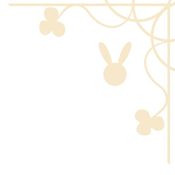
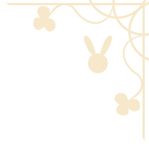

Thank you so much for supporting 『Is the Order a Rabbit??』.
Following the announcement of AnimeJapan 2020's cancellation, our 『Is the Order a Rabbit??』 special stage planned on the 22nd March can't be held anymore either.
Although it is very disappointing, we hope for your understanding and your continuous support.
【Cancelled Event】
Title: 『Is the Order a Rabbit??』 special stage
Date: 22nd March 2020 | 13:50 ~ 14:20
Location: AnimeJapan2020 MOON YELLOW STAGE
Performers: Sakura Ayane, Minase Inori, Taneda Risa, Satomi Sato, Uchida Maaya, Sora Tokui, Murakawa Rie
※ For more details please visit AnimeJapan's Homepage.
https://www.anime-japan.jp/
← Back to ListSource

 
